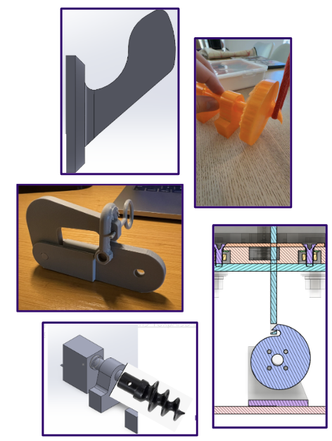
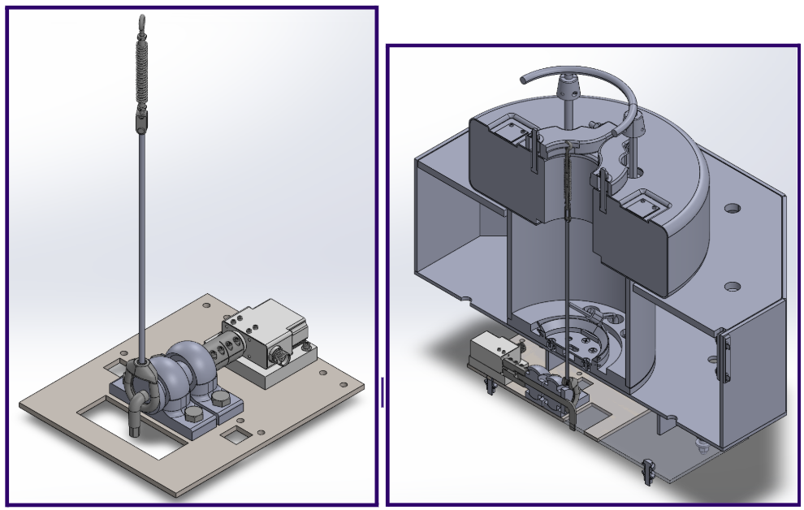
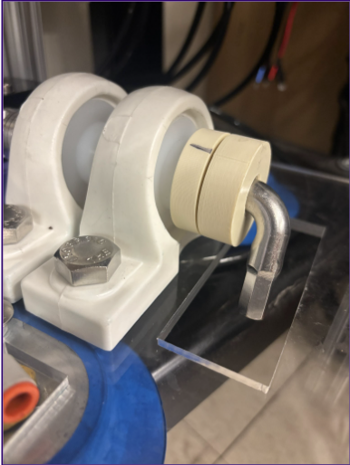

Project Overview
ORPC's RivGen system uses a secondary pop-up buoy to support localization and recovery operations. The existing release approach can be affected by sediment, biofouling, debris, and long-term underwater deployment. Our team designed a mechanically actuated release mechanism intended to improve reliability while avoiding underwater battery power.
Problem Statement
The project addressed the need for a reliable secondary buoy actuation mechanism capable of releasing a pneumatic umbilical recovery buoy after extended inactivity in a submerged, sediment-rich river environment.
Design Requirements
- Operate reliably after long-term underwater deployment.
- Reduce risk of sediment, debris, and biofouling preventing release.
- Use onboard power instead of an underwater battery system.
- Minimize uncontrolled line payout and entanglement during buoy deployment.
- Remain simple to inspect, reset, and maintain in field conditions.
- Integrate with the existing RivGen recovery setup and SCADA signal architecture.
Concept Development and Iterations
Multiple concepts were explored, including rotating cam, pelican hook, eccentric hook, and burn-wire-based ideas. The final direction evolved toward a motor-driven rotary hook mechanism because it offered a direct mechanical release path, fewer complex moving parts, and better manufacturability.

Final Design
The selected design uses a rotary hook connected to an underwater-rated servo through a shaft and coupler. In the locked state, the hook retains the buoy line under tension. When actuated, the hook rotates away from the retained line path, allowing the buoy to release and surface for recovery.
- Rotary hook release architecture
- Servo-driven actuation
- Shaft support with bushings/bearings
- Modular mounting for integration with the existing buoy setup

Manufacturing and Assembly Considerations
The design prioritized commercially available components where possible to reduce machining cost, lead time, and assembly complexity. The CAD base plate was used as a layout reference, while the final mechanism can be mounted directly to the existing buoy structure.
- Off-the-shelf components were preferred to reduce custom manufacturing.
- Mounting holes can be located from the CAD layout after suppressing the temporary base plate.
- The coupler shown in CAD represents the preferred final configuration.
- UHMW bushing holes and bores may require minor reaming due to tolerance stack-up.
- Corrosion-resistant fasteners, including titanium options, were considered for future deployment.
Prototype and Testing
Testing focused on validating the release motion, checking whether the mechanism could actuate under load, and evaluating how sediment or obstruction could affect reliability. Flume testing and sediment testing were used to better understand real operating risks.

Engineering Outcome
The final design demonstrated a practical direction for a simpler and more reliable secondary recovery mechanism. By eliminating more complex underwater release methods and focusing on a mechanically direct rotary hook, the design reduced potential failure points while improving manufacturability, resetability, and serviceability.
Key Takeaways
- Reliable underwater mechanisms require simplicity, tolerance for contamination, and easy reset procedures.
- Early physical prototyping helped reveal issues that were difficult to predict from CAD alone.
- Designing around real client constraints required balancing performance, cost, manufacturability, and maintenance.